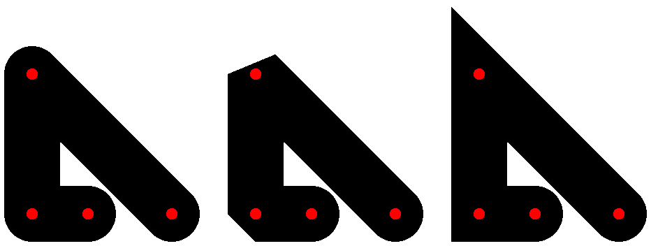

In addition to its color, width, and style, a pen can have a pen stipple bitmap. Drawing with a stipple pen is similar to calling draw-bitmap with the stipple bitmap in region painted by the pen.
A pen style is one of the following:
'transparent —
Draws with no effect (on the outline of the drawn shape). 'solid —
Draws using the pen’s color. If a (monochrome) pen stipple is installed into the pen, black pixels from the stipple are transferred to the destination using the brush’s color, and white pixels from the stipple are not transferred. 'xor —
The same as 'solid, accepted only for partial backward compatibility. - The following special pen modes use the pen’s color, and they only apply when a pen stipple is not used:
To avoid creating multiple pens with the same characteristics, use the global pen-list% object the-pen-list, or provide a color, width, and style to set-pen in dc<%>.
When drawing in 'unsmoothed or 'aligned mode, a pen’s size is truncated after scaling to size that is integral after multiplication by the drawing context’s alignment scale. A pen of size 0 (after truncation, if applicable) uses a non-zero, scale-insensitive line size for the destination drawing context: 1/4 unit (after scaling) for post-script-dc% or pdf-dc% contexts in 'smoothed mode, or 1 unit (after scaling) divided by the alignment scale for any other context. For example, in unscaled canvas and bitmap contexts with an alignment scale of 1.0, a zero-width pen behaves the same as a pen of size 1.
See also make-pen.
构造函数
(new pen% [ [color color] [width width] [style style] [cap cap] [join join] [stipple stipple]]) → (is-a?/c pen%) color : (or/c string? (is-a?/c color%)) = "black" width : (real-in 0 255) = 0 style : pen-style/c = 'solid cap : pen-cap-style/c = 'round join : pen-join-style/c = 'round stipple : (or/c #f (is-a?/c bitmap%)) = #f
方法
(send a-pen get-cap) → pen-cap-style/c
This code draws three diagonal lines, one with each of the possible caps ('round, 'butt, and then 'projecting) and puts a little red dot on the end points of the line.
> (define (plot-line dc x1 y1 x2 y2 cap) (send dc set-pen (send the-pen-list find-or-create-pen "black" 40 'solid cap)) (send dc draw-line x1 y1 x2 y2) (send dc set-brush "red" 'solid) (send dc set-pen "black" 1 'transparent) (send dc draw-ellipse (- x1 4) (- y1 4) 8 8) (send dc draw-ellipse (- x2 4) (- y2 4) 8 8))
> (dc (λ (dc dx dy) (define old-pen (send dc get-pen)) (define old-brush (send dc get-brush)) (plot-line dc 20 30 80 90 'round) (plot-line dc 100 30 160 90 'butt) (plot-line dc 180 30 240 90 'projecting) (send dc set-pen old-pen) (send dc set-brush old-brush)) 270 120)

方法
(send a-pen get-join) → pen-join-style/c
This code shows the three join styles ('round, 'bevel and then 'miter) by drawing a sequence of lines, first with a sharp corner and then with a right-angle. Each of the end points of the lines i with a red dot.
> (define points '((100 . 100) (0 . 0) (0 . 100) (40 . 100)))
> (define (connect-points dc dx dy join) (send dc set-pen (send the-pen-list find-or-create-pen "black" 40 'solid 'round join)) (send dc draw-lines points dx dy) (send dc set-brush "red" 'solid) (send dc set-pen "black" 1 'transparent) (for ([pt (in-list points)]) (send dc draw-ellipse (+ dx (car pt) -4) (+ dy (cdr pt) -4) 8 8)))
> (dc (λ (dc dx dy) (define old-pen (send dc get-pen)) (define old-brush (send dc get-brush)) (connect-points dc 20 50 'round) (connect-points dc 180 50 'bevel) (connect-points dc 340 50 'miter) (send dc set-pen old-pen) (send dc set-brush old-brush)) 460 170) 
方法
(send a-pen get-stipple) → (or/c (is-a?/c bitmap%) #f)
方法
(send a-pen get-style) → pen-style/c
方法
(send a-pen is-immutable?) → boolean?
方法
cap-style : pen-cap-style/c
A pen cannot be modified if it was obtained from a pen-list% or while it is selected into a drawing context.
方法
color : (is-a?/c color%) (send a-pen set-color color-name) → void? color-name : string? (send a-pen set-color red green blue) → void? red : byte? green : byte? blue : byte?
A pen cannot be modified if it was obtained from a pen-list% or while it is selected into a drawing context.
方法
join-style : pen-join-style/c
A pen cannot be modified if it was obtained from a pen-list% or while it is selected into a drawing context.
If bitmap is modified while is associated with a pen, the effect on the pen is unspecified. A pen cannot be modified if it was obtained from a pen-list% or while it is selected into a drawing context.
方法
style : pen-style/c
A pen cannot be modified if it was obtained from a pen-list% or while it is selected into a drawing context.